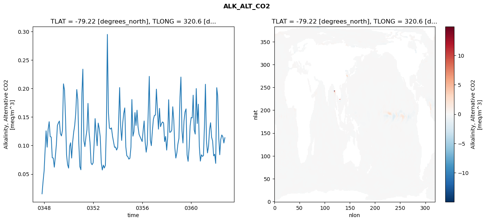
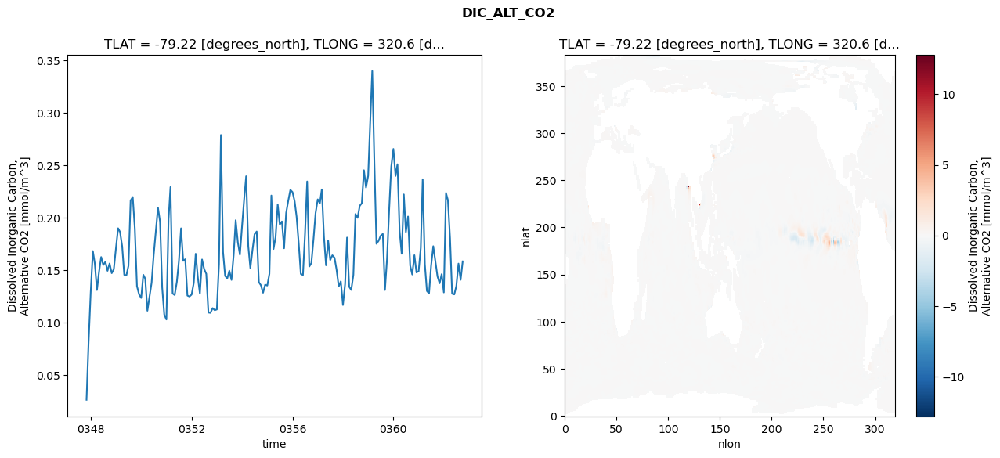
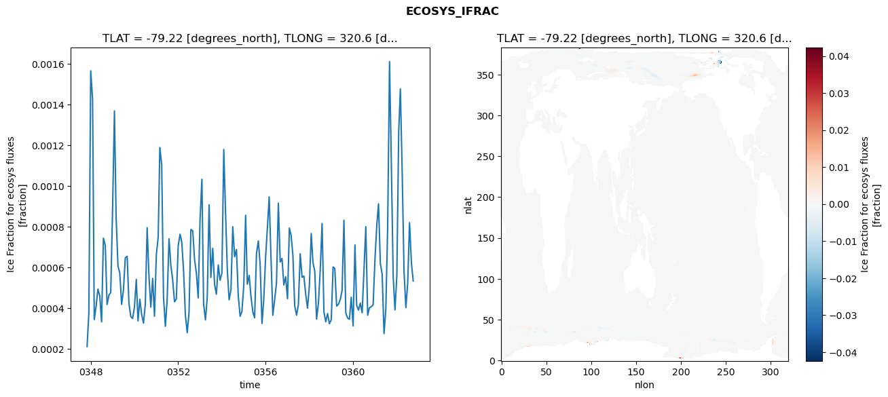
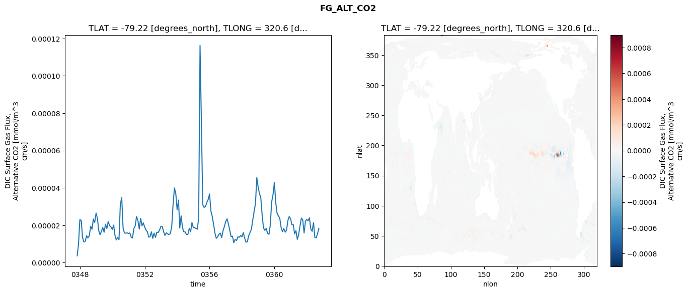

glb-dor_North_Atlantic_basin_035_1999-10-01_00143#
Simulation details#
Case: smyle.cdr-atlas-v0.glb-dor_North_Atlantic_basin_035_1999-10-01_00143.001
Basin: North_Atlantic_basin
Polygon: 35.0
Start date: 1999-10
Show code cell source Hide code cell source
import xarray as xr
import matplotlib.pyplot as plt
Show code cell source Hide code cell source
zarr_store = "/path/to/zarr/store"
# Parameters
zarr_store = "/global/cfs/projectdirs/m4746/Projects/Ocean-CDR-Atlas-v0/data/validation/smyle.cdr-atlas-v0.glb-dor_North_Atlantic_basin_035_1999-10-01_00143.001.validation.zarr"
Show code cell source Hide code cell source
%%time
ds_o = xr.open_zarr(zarr_store).compute()
ds_o
CPU times: user 622 ms, sys: 402 ms, total: 1.02 s
Wall time: 1.26 s
<xarray.Dataset> Size: 2MB
Dimensions: (nlat: 384, nlon: 320, time: 180)
Coordinates:
TLAT float64 8B -79.22
TLONG float64 8B 320.6
ULAT float64 8B -78.95
ULONG float64 8B 321.1
* time (time) object 1kB 0347-11-01 00:00:00 ... 0362-10-01 0...
z_t float32 4B 500.0
Dimensions without coordinates: nlat, nlon
Data variables:
ALK_ALT_CO2_diff (nlat, nlon) float32 492kB nan nan nan ... nan nan nan
ALK_ALT_CO2_rmse (time) float64 1kB 0.01525 0.03675 ... 0.1044 0.1137
DIC_ALT_CO2_diff (nlat, nlon) float32 492kB nan nan nan ... nan nan nan
DIC_ALT_CO2_rmse (time) float64 1kB 0.02609 0.08141 ... 0.1407 0.1583
ECOSYS_IFRAC_diff (nlat, nlon) float32 492kB nan nan nan ... nan nan nan
ECOSYS_IFRAC_rmse (time) float64 1kB 0.0002124 0.0003783 ... 0.0005344
FG_ALT_CO2_diff (nlat, nlon) float32 492kB nan nan nan ... nan nan nan
FG_ALT_CO2_rmse (time) float64 1kB 3.679e-06 9.83e-06 ... 1.837e-05xarray.Dataset
- nlat: 384
- nlon: 320
- time: 180
- TLAT()float64-79.22
- long_name :
- array of t-grid latitudes
- units :
- degrees_north
array(-79.22052261)
- TLONG()float64320.6
- long_name :
- array of t-grid longitudes
- units :
- degrees_east
array(320.56250892)
- ULAT()float64-78.95
- long_name :
- array of u-grid latitudes
- units :
- degrees_north
array(-78.95289509)
- ULONG()float64321.1
- long_name :
- array of u-grid longitudes
- units :
- degrees_east
array(321.12500894)
- time(time)object0347-11-01 00:00:00 ... 0362-10-...
- bounds :
- time_bound
- long_name :
- time
array([cftime.DatetimeNoLeap(347, 11, 1, 0, 0, 0, 0, has_year_zero=True), cftime.DatetimeNoLeap(347, 12, 1, 0, 0, 0, 0, has_year_zero=True), cftime.DatetimeNoLeap(348, 1, 1, 0, 0, 0, 0, has_year_zero=True), cftime.DatetimeNoLeap(348, 2, 1, 0, 0, 0, 0, has_year_zero=True), cftime.DatetimeNoLeap(348, 3, 1, 0, 0, 0, 0, has_year_zero=True), cftime.DatetimeNoLeap(348, 4, 1, 0, 0, 0, 0, has_year_zero=True), cftime.DatetimeNoLeap(348, 5, 1, 0, 0, 0, 0, has_year_zero=True), cftime.DatetimeNoLeap(348, 6, 1, 0, 0, 0, 0, has_year_zero=True), cftime.DatetimeNoLeap(348, 7, 1, 0, 0, 0, 0, has_year_zero=True), cftime.DatetimeNoLeap(348, 8, 1, 0, 0, 0, 0, has_year_zero=True), cftime.DatetimeNoLeap(348, 9, 1, 0, 0, 0, 0, has_year_zero=True), cftime.DatetimeNoLeap(348, 10, 1, 0, 0, 0, 0, has_year_zero=True), cftime.DatetimeNoLeap(348, 11, 1, 0, 0, 0, 0, has_year_zero=True), cftime.DatetimeNoLeap(348, 12, 1, 0, 0, 0, 0, has_year_zero=True), cftime.DatetimeNoLeap(349, 1, 1, 0, 0, 0, 0, has_year_zero=True), cftime.DatetimeNoLeap(349, 2, 1, 0, 0, 0, 0, has_year_zero=True), cftime.DatetimeNoLeap(349, 3, 1, 0, 0, 0, 0, has_year_zero=True), cftime.DatetimeNoLeap(349, 4, 1, 0, 0, 0, 0, has_year_zero=True), cftime.DatetimeNoLeap(349, 5, 1, 0, 0, 0, 0, has_year_zero=True), cftime.DatetimeNoLeap(349, 6, 1, 0, 0, 0, 0, has_year_zero=True), cftime.DatetimeNoLeap(349, 7, 1, 0, 0, 0, 0, has_year_zero=True), cftime.DatetimeNoLeap(349, 8, 1, 0, 0, 0, 0, has_year_zero=True), cftime.DatetimeNoLeap(349, 9, 1, 0, 0, 0, 0, has_year_zero=True), cftime.DatetimeNoLeap(349, 10, 1, 0, 0, 0, 0, has_year_zero=True), cftime.DatetimeNoLeap(349, 11, 1, 0, 0, 0, 0, has_year_zero=True), cftime.DatetimeNoLeap(349, 12, 1, 0, 0, 0, 0, has_year_zero=True), cftime.DatetimeNoLeap(350, 1, 1, 0, 0, 0, 0, has_year_zero=True), cftime.DatetimeNoLeap(350, 2, 1, 0, 0, 0, 0, has_year_zero=True), cftime.DatetimeNoLeap(350, 3, 1, 0, 0, 0, 0, has_year_zero=True), cftime.DatetimeNoLeap(350, 4, 1, 0, 0, 0, 0, has_year_zero=True), cftime.DatetimeNoLeap(350, 5, 1, 0, 0, 0, 0, has_year_zero=True), cftime.DatetimeNoLeap(350, 6, 1, 0, 0, 0, 0, has_year_zero=True), cftime.DatetimeNoLeap(350, 7, 1, 0, 0, 0, 0, has_year_zero=True), cftime.DatetimeNoLeap(350, 8, 1, 0, 0, 0, 0, has_year_zero=True), cftime.DatetimeNoLeap(350, 9, 1, 0, 0, 0, 0, has_year_zero=True), cftime.DatetimeNoLeap(350, 10, 1, 0, 0, 0, 0, has_year_zero=True), cftime.DatetimeNoLeap(350, 11, 1, 0, 0, 0, 0, has_year_zero=True), cftime.DatetimeNoLeap(350, 12, 1, 0, 0, 0, 0, has_year_zero=True), cftime.DatetimeNoLeap(351, 1, 1, 0, 0, 0, 0, has_year_zero=True), cftime.DatetimeNoLeap(351, 2, 1, 0, 0, 0, 0, has_year_zero=True), cftime.DatetimeNoLeap(351, 3, 1, 0, 0, 0, 0, has_year_zero=True), cftime.DatetimeNoLeap(351, 4, 1, 0, 0, 0, 0, has_year_zero=True), cftime.DatetimeNoLeap(351, 5, 1, 0, 0, 0, 0, has_year_zero=True), cftime.DatetimeNoLeap(351, 6, 1, 0, 0, 0, 0, has_year_zero=True), cftime.DatetimeNoLeap(351, 7, 1, 0, 0, 0, 0, has_year_zero=True), cftime.DatetimeNoLeap(351, 8, 1, 0, 0, 0, 0, has_year_zero=True), cftime.DatetimeNoLeap(351, 9, 1, 0, 0, 0, 0, has_year_zero=True), cftime.DatetimeNoLeap(351, 10, 1, 0, 0, 0, 0, has_year_zero=True), cftime.DatetimeNoLeap(351, 11, 1, 0, 0, 0, 0, has_year_zero=True), cftime.DatetimeNoLeap(351, 12, 1, 0, 0, 0, 0, has_year_zero=True), cftime.DatetimeNoLeap(352, 1, 1, 0, 0, 0, 0, has_year_zero=True), cftime.DatetimeNoLeap(352, 2, 1, 0, 0, 0, 0, has_year_zero=True), cftime.DatetimeNoLeap(352, 3, 1, 0, 0, 0, 0, has_year_zero=True), cftime.DatetimeNoLeap(352, 4, 1, 0, 0, 0, 0, has_year_zero=True), cftime.DatetimeNoLeap(352, 5, 1, 0, 0, 0, 0, has_year_zero=True), cftime.DatetimeNoLeap(352, 6, 1, 0, 0, 0, 0, has_year_zero=True), cftime.DatetimeNoLeap(352, 7, 1, 0, 0, 0, 0, has_year_zero=True), cftime.DatetimeNoLeap(352, 8, 1, 0, 0, 0, 0, has_year_zero=True), cftime.DatetimeNoLeap(352, 9, 1, 0, 0, 0, 0, has_year_zero=True), cftime.DatetimeNoLeap(352, 10, 1, 0, 0, 0, 0, has_year_zero=True), cftime.DatetimeNoLeap(352, 11, 1, 0, 0, 0, 0, has_year_zero=True), cftime.DatetimeNoLeap(352, 12, 1, 0, 0, 0, 0, has_year_zero=True), cftime.DatetimeNoLeap(353, 1, 1, 0, 0, 0, 0, has_year_zero=True), cftime.DatetimeNoLeap(353, 2, 1, 0, 0, 0, 0, has_year_zero=True), cftime.DatetimeNoLeap(353, 3, 1, 0, 0, 0, 0, has_year_zero=True), cftime.DatetimeNoLeap(353, 4, 1, 0, 0, 0, 0, has_year_zero=True), cftime.DatetimeNoLeap(353, 5, 1, 0, 0, 0, 0, has_year_zero=True), cftime.DatetimeNoLeap(353, 6, 1, 0, 0, 0, 0, has_year_zero=True), cftime.DatetimeNoLeap(353, 7, 1, 0, 0, 0, 0, has_year_zero=True), cftime.DatetimeNoLeap(353, 8, 1, 0, 0, 0, 0, has_year_zero=True), cftime.DatetimeNoLeap(353, 9, 1, 0, 0, 0, 0, has_year_zero=True), cftime.DatetimeNoLeap(353, 10, 1, 0, 0, 0, 0, has_year_zero=True), cftime.DatetimeNoLeap(353, 11, 1, 0, 0, 0, 0, has_year_zero=True), cftime.DatetimeNoLeap(353, 12, 1, 0, 0, 0, 0, has_year_zero=True), cftime.DatetimeNoLeap(354, 1, 1, 0, 0, 0, 0, has_year_zero=True), cftime.DatetimeNoLeap(354, 2, 1, 0, 0, 0, 0, has_year_zero=True), cftime.DatetimeNoLeap(354, 3, 1, 0, 0, 0, 0, has_year_zero=True), cftime.DatetimeNoLeap(354, 4, 1, 0, 0, 0, 0, has_year_zero=True), cftime.DatetimeNoLeap(354, 5, 1, 0, 0, 0, 0, has_year_zero=True), cftime.DatetimeNoLeap(354, 6, 1, 0, 0, 0, 0, has_year_zero=True), cftime.DatetimeNoLeap(354, 7, 1, 0, 0, 0, 0, has_year_zero=True), cftime.DatetimeNoLeap(354, 8, 1, 0, 0, 0, 0, has_year_zero=True), cftime.DatetimeNoLeap(354, 9, 1, 0, 0, 0, 0, has_year_zero=True), cftime.DatetimeNoLeap(354, 10, 1, 0, 0, 0, 0, has_year_zero=True), cftime.DatetimeNoLeap(354, 11, 1, 0, 0, 0, 0, has_year_zero=True), cftime.DatetimeNoLeap(354, 12, 1, 0, 0, 0, 0, has_year_zero=True), cftime.DatetimeNoLeap(355, 1, 1, 0, 0, 0, 0, has_year_zero=True), cftime.DatetimeNoLeap(355, 2, 1, 0, 0, 0, 0, has_year_zero=True), cftime.DatetimeNoLeap(355, 3, 1, 0, 0, 0, 0, has_year_zero=True), cftime.DatetimeNoLeap(355, 4, 1, 0, 0, 0, 0, has_year_zero=True), cftime.DatetimeNoLeap(355, 5, 1, 0, 0, 0, 0, has_year_zero=True), cftime.DatetimeNoLeap(355, 6, 1, 0, 0, 0, 0, has_year_zero=True), cftime.DatetimeNoLeap(355, 7, 1, 0, 0, 0, 0, has_year_zero=True), cftime.DatetimeNoLeap(355, 8, 1, 0, 0, 0, 0, has_year_zero=True), cftime.DatetimeNoLeap(355, 9, 1, 0, 0, 0, 0, has_year_zero=True), cftime.DatetimeNoLeap(355, 10, 1, 0, 0, 0, 0, has_year_zero=True), cftime.DatetimeNoLeap(355, 11, 1, 0, 0, 0, 0, has_year_zero=True), cftime.DatetimeNoLeap(355, 12, 1, 0, 0, 0, 0, has_year_zero=True), cftime.DatetimeNoLeap(356, 1, 1, 0, 0, 0, 0, has_year_zero=True), cftime.DatetimeNoLeap(356, 2, 1, 0, 0, 0, 0, has_year_zero=True), cftime.DatetimeNoLeap(356, 3, 1, 0, 0, 0, 0, has_year_zero=True), cftime.DatetimeNoLeap(356, 4, 1, 0, 0, 0, 0, has_year_zero=True), cftime.DatetimeNoLeap(356, 5, 1, 0, 0, 0, 0, has_year_zero=True), cftime.DatetimeNoLeap(356, 6, 1, 0, 0, 0, 0, has_year_zero=True), cftime.DatetimeNoLeap(356, 7, 1, 0, 0, 0, 0, has_year_zero=True), cftime.DatetimeNoLeap(356, 8, 1, 0, 0, 0, 0, has_year_zero=True), cftime.DatetimeNoLeap(356, 9, 1, 0, 0, 0, 0, has_year_zero=True), cftime.DatetimeNoLeap(356, 10, 1, 0, 0, 0, 0, has_year_zero=True), cftime.DatetimeNoLeap(356, 11, 1, 0, 0, 0, 0, has_year_zero=True), cftime.DatetimeNoLeap(356, 12, 1, 0, 0, 0, 0, has_year_zero=True), cftime.DatetimeNoLeap(357, 1, 1, 0, 0, 0, 0, has_year_zero=True), cftime.DatetimeNoLeap(357, 2, 1, 0, 0, 0, 0, has_year_zero=True), cftime.DatetimeNoLeap(357, 3, 1, 0, 0, 0, 0, has_year_zero=True), cftime.DatetimeNoLeap(357, 4, 1, 0, 0, 0, 0, has_year_zero=True), cftime.DatetimeNoLeap(357, 5, 1, 0, 0, 0, 0, has_year_zero=True), cftime.DatetimeNoLeap(357, 6, 1, 0, 0, 0, 0, has_year_zero=True), cftime.DatetimeNoLeap(357, 7, 1, 0, 0, 0, 0, has_year_zero=True), cftime.DatetimeNoLeap(357, 8, 1, 0, 0, 0, 0, has_year_zero=True), cftime.DatetimeNoLeap(357, 9, 1, 0, 0, 0, 0, has_year_zero=True), cftime.DatetimeNoLeap(357, 10, 1, 0, 0, 0, 0, has_year_zero=True), cftime.DatetimeNoLeap(357, 11, 1, 0, 0, 0, 0, has_year_zero=True), cftime.DatetimeNoLeap(357, 12, 1, 0, 0, 0, 0, has_year_zero=True), cftime.DatetimeNoLeap(358, 1, 1, 0, 0, 0, 0, has_year_zero=True), cftime.DatetimeNoLeap(358, 2, 1, 0, 0, 0, 0, has_year_zero=True), cftime.DatetimeNoLeap(358, 3, 1, 0, 0, 0, 0, has_year_zero=True), cftime.DatetimeNoLeap(358, 4, 1, 0, 0, 0, 0, has_year_zero=True), cftime.DatetimeNoLeap(358, 5, 1, 0, 0, 0, 0, has_year_zero=True), cftime.DatetimeNoLeap(358, 6, 1, 0, 0, 0, 0, has_year_zero=True), cftime.DatetimeNoLeap(358, 7, 1, 0, 0, 0, 0, has_year_zero=True), cftime.DatetimeNoLeap(358, 8, 1, 0, 0, 0, 0, has_year_zero=True), cftime.DatetimeNoLeap(358, 9, 1, 0, 0, 0, 0, has_year_zero=True), cftime.DatetimeNoLeap(358, 10, 1, 0, 0, 0, 0, has_year_zero=True), cftime.DatetimeNoLeap(358, 11, 1, 0, 0, 0, 0, has_year_zero=True), cftime.DatetimeNoLeap(358, 12, 1, 0, 0, 0, 0, has_year_zero=True), cftime.DatetimeNoLeap(359, 1, 1, 0, 0, 0, 0, has_year_zero=True), cftime.DatetimeNoLeap(359, 2, 1, 0, 0, 0, 0, has_year_zero=True), cftime.DatetimeNoLeap(359, 3, 1, 0, 0, 0, 0, has_year_zero=True), cftime.DatetimeNoLeap(359, 4, 1, 0, 0, 0, 0, has_year_zero=True), cftime.DatetimeNoLeap(359, 5, 1, 0, 0, 0, 0, has_year_zero=True), cftime.DatetimeNoLeap(359, 6, 1, 0, 0, 0, 0, has_year_zero=True), cftime.DatetimeNoLeap(359, 7, 1, 0, 0, 0, 0, has_year_zero=True), cftime.DatetimeNoLeap(359, 8, 1, 0, 0, 0, 0, has_year_zero=True), cftime.DatetimeNoLeap(359, 9, 1, 0, 0, 0, 0, has_year_zero=True), cftime.DatetimeNoLeap(359, 10, 1, 0, 0, 0, 0, has_year_zero=True), cftime.DatetimeNoLeap(359, 11, 1, 0, 0, 0, 0, has_year_zero=True), cftime.DatetimeNoLeap(359, 12, 1, 0, 0, 0, 0, has_year_zero=True), cftime.DatetimeNoLeap(360, 1, 1, 0, 0, 0, 0, has_year_zero=True), cftime.DatetimeNoLeap(360, 2, 1, 0, 0, 0, 0, has_year_zero=True), cftime.DatetimeNoLeap(360, 3, 1, 0, 0, 0, 0, has_year_zero=True), cftime.DatetimeNoLeap(360, 4, 1, 0, 0, 0, 0, has_year_zero=True), cftime.DatetimeNoLeap(360, 5, 1, 0, 0, 0, 0, has_year_zero=True), cftime.DatetimeNoLeap(360, 6, 1, 0, 0, 0, 0, has_year_zero=True), cftime.DatetimeNoLeap(360, 7, 1, 0, 0, 0, 0, has_year_zero=True), cftime.DatetimeNoLeap(360, 8, 1, 0, 0, 0, 0, has_year_zero=True), cftime.DatetimeNoLeap(360, 9, 1, 0, 0, 0, 0, has_year_zero=True), cftime.DatetimeNoLeap(360, 10, 1, 0, 0, 0, 0, has_year_zero=True), cftime.DatetimeNoLeap(360, 11, 1, 0, 0, 0, 0, has_year_zero=True), cftime.DatetimeNoLeap(360, 12, 1, 0, 0, 0, 0, has_year_zero=True), cftime.DatetimeNoLeap(361, 1, 1, 0, 0, 0, 0, has_year_zero=True), cftime.DatetimeNoLeap(361, 2, 1, 0, 0, 0, 0, has_year_zero=True), cftime.DatetimeNoLeap(361, 3, 1, 0, 0, 0, 0, has_year_zero=True), cftime.DatetimeNoLeap(361, 4, 1, 0, 0, 0, 0, has_year_zero=True), cftime.DatetimeNoLeap(361, 5, 1, 0, 0, 0, 0, has_year_zero=True), cftime.DatetimeNoLeap(361, 6, 1, 0, 0, 0, 0, has_year_zero=True), cftime.DatetimeNoLeap(361, 7, 1, 0, 0, 0, 0, has_year_zero=True), cftime.DatetimeNoLeap(361, 8, 1, 0, 0, 0, 0, has_year_zero=True), cftime.DatetimeNoLeap(361, 9, 1, 0, 0, 0, 0, has_year_zero=True), cftime.DatetimeNoLeap(361, 10, 1, 0, 0, 0, 0, has_year_zero=True), cftime.DatetimeNoLeap(361, 11, 1, 0, 0, 0, 0, has_year_zero=True), cftime.DatetimeNoLeap(361, 12, 1, 0, 0, 0, 0, has_year_zero=True), cftime.DatetimeNoLeap(362, 1, 1, 0, 0, 0, 0, has_year_zero=True), cftime.DatetimeNoLeap(362, 2, 1, 0, 0, 0, 0, has_year_zero=True), cftime.DatetimeNoLeap(362, 3, 1, 0, 0, 0, 0, has_year_zero=True), cftime.DatetimeNoLeap(362, 4, 1, 0, 0, 0, 0, has_year_zero=True), cftime.DatetimeNoLeap(362, 5, 1, 0, 0, 0, 0, has_year_zero=True), cftime.DatetimeNoLeap(362, 6, 1, 0, 0, 0, 0, has_year_zero=True), cftime.DatetimeNoLeap(362, 7, 1, 0, 0, 0, 0, has_year_zero=True), cftime.DatetimeNoLeap(362, 8, 1, 0, 0, 0, 0, has_year_zero=True), cftime.DatetimeNoLeap(362, 9, 1, 0, 0, 0, 0, has_year_zero=True), cftime.DatetimeNoLeap(362, 10, 1, 0, 0, 0, 0, has_year_zero=True)], dtype=object) - z_t()float32500.0
- long_name :
- depth from surface to midpoint of layer
- positive :
- down
- units :
- centimeters
- valid_max :
- 537500.0
- valid_min :
- 500.0
array(500., dtype=float32)
- ALK_ALT_CO2_diff(nlat, nlon)float32nan nan nan nan ... nan nan nan nan
- cell_methods :
- time: mean
- grid_loc :
- 3111
- long_name :
- Alkalinity, Alternative CO2
- units :
- meq/m^3
array([[ nan, nan, nan, ..., nan, nan, nan], [ nan, nan, nan, ..., nan, nan, nan], [ 0.02294922, 0.00537109, -0.0012207 , ..., nan, nan, nan], ..., [ nan, nan, nan, ..., nan, nan, nan], [ nan, nan, nan, ..., nan, nan, nan], [ nan, nan, nan, ..., nan, nan, nan]], dtype=float32) - ALK_ALT_CO2_rmse(time)float640.01525 0.03675 ... 0.1044 0.1137
- cell_methods :
- time: mean
- grid_loc :
- 3111
- long_name :
- Alkalinity, Alternative CO2
- units :
- meq/m^3
array([0.01525339, 0.03675002, 0.05530364, 0.09317185, 0.1257843 , 0.0971206 , 0.12844916, 0.14184702, 0.11570871, 0.11493412, 0.07854727, 0.07807232, 0.06201184, 0.08028823, 0.10145922, 0.13521608, 0.13958974, 0.14298875, 0.12088621, 0.11687275, 0.126421 , 0.20825861, 0.19700725, 0.14768283, 0.08341222, 0.06664411, 0.0603715 , 0.09868335, 0.10482412, 0.0779893 , 0.10604297, 0.12344574, 0.13502303, 0.15626512, 0.19826752, 0.18058131, 0.10370279, 0.06312278, 0.05744865, 0.19180225, 0.23401673, 0.10821565, 0.09815163, 0.11525505, 0.12729221, 0.17399249, 0.12408837, 0.10481902, 0.06933355, 0.06637785, 0.06964195, 0.1045023 , 0.14724244, 0.12113715, 0.09960273, 0.13937322, 0.13033249, 0.11490715, 0.06952557, 0.05706694, 0.06559587, 0.06054738, 0.06545948, 0.13918874, 0.29499721, 0.15756827, 0.13064674, 0.12890805, 0.13096465, 0.11638173, 0.10652769, 0.09689712, 0.09735359, 0.09206853, 0.09642484, 0.14475997, 0.2017341 , 0.13377836, 0.10895164, 0.13955469, 0.1564327 , 0.16604213, 0.09801136, 0.08213525, 0.08037771, 0.07613766, 0.07764173, 0.09710628, 0.18075282, 0.11638121, 0.12432844, 0.15787067, 0.13515783, 0.16200067, 0.13233884, 0.11954877, 0.1152715 , 0.11130203, 0.10699051, 0.12752358, 0.14310697, 0.10569891, 0.08835496, 0.10190056, 0.15859309, 0.2213826 , 0.10988712, 0.09972618, 0.12564298, 0.14601673, 0.15283335, 0.15347042, 0.19897397, 0.16204025, 0.12873012, 0.16522391, 0.13307187, 0.13852039, 0.14141382, 0.13959965, 0.10692237, 0.11595786, 0.09199568, 0.11530425, 0.18040981, 0.12311129, 0.12385093, 0.12694577, 0.16803309, 0.1442787 , 0.09582301, 0.07802519, 0.08726331, 0.10262822, 0.11253898, 0.18470575, 0.22020135, 0.12615872, 0.10444742, 0.14344873, 0.15893097, 0.16436799, 0.0834647 , 0.07229661, 0.09639258, 0.13489072, 0.1491574 , 0.14843338, 0.18838257, 0.12735444, 0.12007565, 0.1999935 , 0.13867111, 0.17257378, 0.09810676, 0.07263717, 0.08374685, 0.08091926, 0.08231778, 0.13631717, 0.20753515, 0.10821873, 0.08704653, 0.09862483, 0.1275128 , 0.14000281, 0.11461336, 0.10793207, 0.08182664, 0.08470023, 0.06869002, 0.20154576, 0.18717073, 0.11435049, 0.08381297, 0.11084633, 0.11852066, 0.11542509, 0.10443846, 0.11372006]) - DIC_ALT_CO2_diff(nlat, nlon)float32nan nan nan nan ... nan nan nan nan
- cell_methods :
- time: mean
- grid_loc :
- 3111
- long_name :
- Dissolved Inorganic Carbon, Alternative CO2
- units :
- mmol/m^3
array([[ nan, nan, nan, ..., nan, nan, nan], [ nan, nan, nan, ..., nan, nan, nan], [0.02929688, 0.0144043 , 0.00610352, ..., nan, nan, nan], ..., [ nan, nan, nan, ..., nan, nan, nan], [ nan, nan, nan, ..., nan, nan, nan], [ nan, nan, nan, ..., nan, nan, nan]], dtype=float32) - DIC_ALT_CO2_rmse(time)float640.02609 0.08141 ... 0.1407 0.1583
- cell_methods :
- time: mean
- grid_loc :
- 3111
- long_name :
- Dissolved Inorganic Carbon, Alternative CO2
- units :
- mmol/m^3
array([0.02608585, 0.08140902, 0.12943994, 0.16818043, 0.15620959, 0.13095317, 0.14823698, 0.16248458, 0.15486886, 0.15790383, 0.1492906 , 0.15630838, 0.14704228, 0.15082054, 0.17099398, 0.18996078, 0.18644307, 0.17277629, 0.14545503, 0.14504551, 0.15398328, 0.2164083 , 0.21979646, 0.18971617, 0.13461342, 0.12694051, 0.12339463, 0.14552536, 0.14177023, 0.11117008, 0.12406135, 0.13792435, 0.16438729, 0.18735295, 0.20969253, 0.19623235, 0.1333115 , 0.10758267, 0.10278703, 0.19866294, 0.22929517, 0.12762643, 0.12616335, 0.13868937, 0.15870889, 0.18989814, 0.15879167, 0.16033492, 0.12565037, 0.12477006, 0.12660156, 0.13768729, 0.1655762 , 0.14314843, 0.12750336, 0.16011648, 0.15105093, 0.14642908, 0.10943821, 0.10916262, 0.11368187, 0.11172047, 0.11239009, 0.15573465, 0.2790484 , 0.16713078, 0.14437108, 0.14209221, 0.14938971, 0.14061031, 0.16421782, 0.19764144, 0.17661821, 0.16476337, 0.19223926, 0.2184799 , 0.2396127 , 0.17282468, 0.15181311, 0.16937409, 0.18426093, 0.18689361, 0.13846585, 0.13547684, 0.12836576, 0.13603212, 0.13521308, 0.14643391, 0.22121185, 0.17011703, 0.18116864, 0.21273451, 0.19353757, 0.19647003, 0.17079238, 0.20462995, 0.21641582, 0.22658677, 0.22448868, 0.21566918, 0.20102789, 0.17538479, 0.1463411 , 0.14524216, 0.18466682, 0.23466563, 0.15341105, 0.15668175, 0.17961867, 0.20445496, 0.21755903, 0.21389341, 0.22705335, 0.18211832, 0.154549 , 0.17822706, 0.15959244, 0.16414267, 0.16179661, 0.15017204, 0.13433101, 0.13919595, 0.11664718, 0.13661395, 0.18108975, 0.13409025, 0.13101303, 0.14535444, 0.20354768, 0.19985799, 0.21135432, 0.21383983, 0.24535589, 0.22881531, 0.2399567 , 0.29403234, 0.34008783, 0.25222887, 0.17509575, 0.17796047, 0.18282615, 0.18454781, 0.13097867, 0.16079739, 0.20809182, 0.24891183, 0.26571981, 0.23988876, 0.25109728, 0.18707814, 0.16556102, 0.22227491, 0.18636674, 0.20116869, 0.15418326, 0.14574245, 0.16420803, 0.14772587, 0.14890241, 0.17105572, 0.23675871, 0.15564834, 0.13004576, 0.1277992 , 0.15420317, 0.17281476, 0.15797405, 0.14393042, 0.13737282, 0.14612828, 0.12865927, 0.22368165, 0.21683277, 0.18020209, 0.12744651, 0.12674032, 0.13479455, 0.15619814, 0.14068247, 0.15832015]) - ECOSYS_IFRAC_diff(nlat, nlon)float32nan nan nan nan ... nan nan nan nan
- cell_methods :
- time: mean
- grid_loc :
- 2110
- long_name :
- Ice Fraction for ecosys fluxes
- units :
- fraction
array([[ nan, nan, nan, ..., nan, nan, nan], [ nan, nan, nan, ..., nan, nan, nan], [3.5762787e-07, 1.0132790e-06, 2.3841858e-07, ..., nan, nan, nan], ..., [ nan, nan, nan, ..., nan, nan, nan], [ nan, nan, nan, ..., nan, nan, nan], [ nan, nan, nan, ..., nan, nan, nan]], dtype=float32) - ECOSYS_IFRAC_rmse(time)float640.0002124 0.0003783 ... 0.0005344
- cell_methods :
- time: mean
- grid_loc :
- 2110
- long_name :
- Ice Fraction for ecosys fluxes
- units :
- fraction
array([0.00021236, 0.00037835, 0.00156519, 0.00142597, 0.00034489, 0.0004104 , 0.00049464, 0.00046019, 0.00033355, 0.00074418, 0.00070899, 0.00041892, 0.00046475, 0.00047805, 0.00088845, 0.00136823, 0.00084643, 0.00060682, 0.00057419, 0.00041935, 0.0004883 , 0.0006477 , 0.00065528, 0.00042493, 0.0003599 , 0.00035028, 0.00040588, 0.00054209, 0.00033845, 0.00044429, 0.00036974, 0.00032761, 0.00041955, 0.00079601, 0.0005523 , 0.00040612, 0.00054721, 0.000361 , 0.00066089, 0.00074805, 0.00118902, 0.00110344, 0.00045634, 0.00031208, 0.00044181, 0.00074131, 0.00060971, 0.00053944, 0.00043206, 0.00044572, 0.00070567, 0.00076385, 0.0007266 , 0.00058532, 0.00036706, 0.00028036, 0.00037892, 0.00078666, 0.00078035, 0.00064052, 0.00057193, 0.0004513 , 0.00083582, 0.00103325, 0.00042301, 0.00034312, 0.00045323, 0.00090755, 0.00055164, 0.00069464, 0.00051653, 0.00046934, 0.00061276, 0.00053765, 0.00057301, 0.00117952, 0.00088578, 0.00059002, 0.00044198, 0.00049012, 0.00080021, 0.00065308, 0.00068851, 0.00046087, 0.00036124, 0.0003844 , 0.00051264, 0.00085655, 0.00051823, 0.00056142, 0.0004574 , 0.00038256, 0.00035378, 0.00066855, 0.00073077, 0.00061624, 0.00032512, 0.00044675, 0.00065456, 0.00080412, 0.00094674, 0.00064187, 0.00036634, 0.00044437, 0.00052487, 0.00091623, 0.00062743, 0.00064485, 0.00051459, 0.00055511, 0.00044724, 0.00079402, 0.00076027, 0.00066101, 0.0004117 , 0.00036631, 0.00041674, 0.00066769, 0.00055234, 0.00055858, 0.00046872, 0.000401 , 0.00051006, 0.00076674, 0.00062675, 0.00058186, 0.00034701, 0.00042484, 0.00058824, 0.00081609, 0.00038264, 0.0003339 , 0.00037437, 0.00032472, 0.00034336, 0.00060297, 0.00059606, 0.0004111 , 0.00041971, 0.00044353, 0.00048685, 0.00083274, 0.00037664, 0.00035246, 0.00034648, 0.00045468, 0.0003137 , 0.00071101, 0.0004158 , 0.00039125, 0.00042594, 0.00037835, 0.00058485, 0.00080076, 0.00036638, 0.00040305, 0.0004081 , 0.00041715, 0.00064233, 0.00081111, 0.00091283, 0.00061882, 0.0005682 , 0.00027617, 0.00039507, 0.00080195, 0.00161058, 0.00111429, 0.00055528, 0.00039255, 0.00056141, 0.00126429, 0.00147627, 0.00105633, 0.00058129, 0.00040402, 0.00052222, 0.00082034, 0.000624 , 0.00053436]) - FG_ALT_CO2_diff(nlat, nlon)float32nan nan nan nan ... nan nan nan nan
- cell_methods :
- time: mean
- grid_loc :
- 2110
- long_name :
- DIC Surface Gas Flux, Alternative CO2
- units :
- mmol/m^3 cm/s
array([[ nan, nan, nan, ..., nan, nan, nan], [ nan, nan, nan, ..., nan, nan, nan], [-8.0280529e-09, -1.1582841e-08, -6.3566521e-09, ..., nan, nan, nan], ..., [ nan, nan, nan, ..., nan, nan, nan], [ nan, nan, nan, ..., nan, nan, nan], [ nan, nan, nan, ..., nan, nan, nan]], dtype=float32) - FG_ALT_CO2_rmse(time)float643.679e-06 9.83e-06 ... 1.837e-05
- cell_methods :
- time: mean
- grid_loc :
- 2110
- long_name :
- DIC Surface Gas Flux, Alternative CO2
- units :
- mmol/m^3 cm/s
array([3.67861997e-06, 9.83012418e-06, 2.30861985e-05, 2.26365631e-05, 1.36159869e-05, 1.10833503e-05, 1.14238076e-05, 1.43898599e-05, 1.32257174e-05, 1.43133326e-05, 1.94724092e-05, 1.79164608e-05, 2.33819146e-05, 2.15429676e-05, 2.65522535e-05, 2.35050076e-05, 1.72969490e-05, 1.49225280e-05, 1.68206480e-05, 1.87687009e-05, 1.62937819e-05, 2.05995864e-05, 1.82668194e-05, 2.20224879e-05, 1.98103964e-05, 1.91556922e-05, 1.78048918e-05, 2.01191557e-05, 1.47963728e-05, 1.21450565e-05, 1.35687120e-05, 1.23226499e-05, 3.11863728e-05, 3.48464172e-05, 1.85913673e-05, 1.58925718e-05, 1.57615726e-05, 1.59790691e-05, 1.56333761e-05, 1.59058398e-05, 1.37521842e-05, 1.31843974e-05, 1.82980021e-05, 1.96396351e-05, 2.47146402e-05, 2.24515727e-05, 1.80065787e-05, 2.37380085e-05, 1.97444725e-05, 2.13158022e-05, 1.90031210e-05, 1.73572416e-05, 1.65759837e-05, 1.36926544e-05, 1.38655601e-05, 1.65131875e-05, 1.30334812e-05, 1.58306684e-05, 1.35583536e-05, 1.62996819e-05, 1.61818087e-05, 1.74617917e-05, 1.94008717e-05, 1.93333311e-05, 1.66347860e-05, 1.45978002e-05, 1.59524623e-05, 1.53938073e-05, 1.50784544e-05, 1.55796258e-05, 1.92971657e-05, 3.08954418e-05, 3.99842167e-05, 3.71719228e-05, 2.82531397e-05, 3.35071887e-05, 1.84975984e-05, 2.50665792e-05, 1.87867423e-05, 1.64833528e-05, ... 2.49157566e-05, 2.06843140e-05, 1.60480993e-05, 1.30306310e-05, 1.38689488e-05, 1.51782692e-05, 1.58082163e-05, 1.34238053e-05, 1.71805404e-05, 1.93479542e-05, 2.20865926e-05, 2.34422265e-05, 2.08151628e-05, 1.73007171e-05, 1.40057077e-05, 1.41900917e-05, 1.06695295e-05, 1.24932750e-05, 1.18703955e-05, 1.38149097e-05, 1.36047558e-05, 1.45022521e-05, 1.38698115e-05, 1.61415407e-05, 1.32972437e-05, 1.09631083e-05, 1.11643413e-05, 1.43979948e-05, 1.60890670e-05, 1.78574408e-05, 2.28433526e-05, 2.73471140e-05, 3.15877451e-05, 4.55366722e-05, 4.03482981e-05, 3.68145458e-05, 3.47767030e-05, 2.52386889e-05, 1.85363806e-05, 1.72997513e-05, 1.83351751e-05, 1.56840355e-05, 1.51605027e-05, 2.02384268e-05, 3.25641257e-05, 3.63479646e-05, 4.30072819e-05, 3.20870205e-05, 2.65546983e-05, 2.50147711e-05, 2.39926020e-05, 1.89163852e-05, 1.66132261e-05, 1.82674884e-05, 1.62920545e-05, 1.73724786e-05, 2.25352441e-05, 2.46875131e-05, 2.34650811e-05, 2.02262097e-05, 2.04431774e-05, 1.53878415e-05, 1.71643555e-05, 1.24566411e-05, 1.49404123e-05, 1.97451167e-05, 2.38762257e-05, 2.29012341e-05, 1.58894840e-05, 2.22525048e-05, 2.31652403e-05, 2.23669293e-05, 2.40013973e-05, 1.80667487e-05, 1.67830873e-05, 2.14011102e-05, 1.34819441e-05, 1.33236348e-05, 1.55844798e-05, 1.83711560e-05])
- timePandasIndex
PandasIndex(CFTimeIndex([0347-11-01 00:00:00, 0347-12-01 00:00:00, 0348-01-01 00:00:00, 0348-02-01 00:00:00, 0348-03-01 00:00:00, 0348-04-01 00:00:00, 0348-05-01 00:00:00, 0348-06-01 00:00:00, 0348-07-01 00:00:00, 0348-08-01 00:00:00, ... 0362-01-01 00:00:00, 0362-02-01 00:00:00, 0362-03-01 00:00:00, 0362-04-01 00:00:00, 0362-05-01 00:00:00, 0362-06-01 00:00:00, 0362-07-01 00:00:00, 0362-08-01 00:00:00, 0362-09-01 00:00:00, 0362-10-01 00:00:00], dtype='object', length=180, calendar='noleap', freq='MS'))
Show code cell source Hide code cell source
variables = [v[:-5] for v in ds_o.variables if "_rmse" in v]
Show code cell source Hide code cell source
plt.rcParams.update({'figure.max_open_warning': 0})
for v in variables:
fig, axs = plt.subplots(1, 2, figsize=(15, 6))
ds_o[f"{v}_rmse"].plot(ax=axs[0])
ds_o[f"{v}_diff"].plot(ax=axs[1])
plt.suptitle(v, fontweight="bold")



